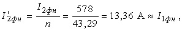
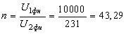
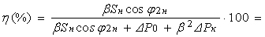
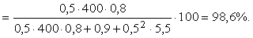

Определить:
• номинальные линейные и фазные напряжения и токи обмоток трансформатора;
• параметры электрической схемы замещения приведенного трансформатора и изобразить Т-образную схему замещения фазы А нагруженного трансформатора с указанием на ней всех параметров;
• КПД трансформатора при заданных коэффициентах β и cosφ2.
Рассчитать и построить:
• внешнюю характеристику U2 = f(β) и зависимость КПД от нагрузки, т. е. η = f(β) при cosφ2 = 0,8 (инд).
Решение.
7. Приведенный к первичной обмотке вторичный ток
 где  – коэффициент трансформации.
8. КПД трансформатора при β = 0,5 и cosφ2 = cosφ2н = 0,8

Далее.